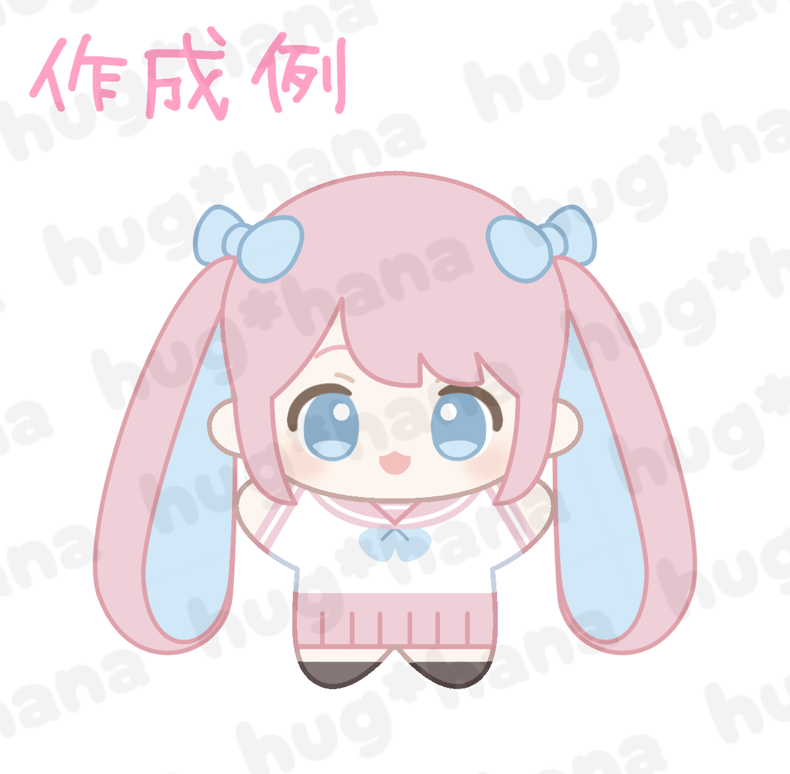

✓
タイプ選択
✓
時期選択
✓
フォーム入力
🎉
STEP 1 / Confirmed
STEP 1 完了！
依頼情報を受け取りました。確認メールをお送りしているのでご確認ください
依頼番号 / Order Number
-
STEP 2のフォームに記入してね
ご依頼内容
タイプ
-
希望時期
-
お名前
-
メール
-
X ID
-
📧
-
宛に確認メールをお送りしました。
届いていない場合は迷惑メールフォルダをご確認ください。
STEP 2 / Next Step
🎨 イラスト・データを
送ってください
依頼番号を添えて、下記フォームよりイラストや転写用テンプレート、こだわりポイントをお送りください。
※ 後から送っていただいても大丈夫です！このページをブックマークしておいてね。

イラスト・データを送る →
後で送る（トップへ戻る）
← hug nui² studio トップへ
↓
STEP 2 へ進んでください